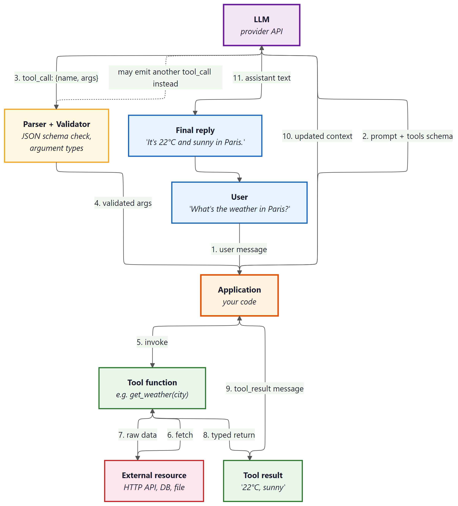
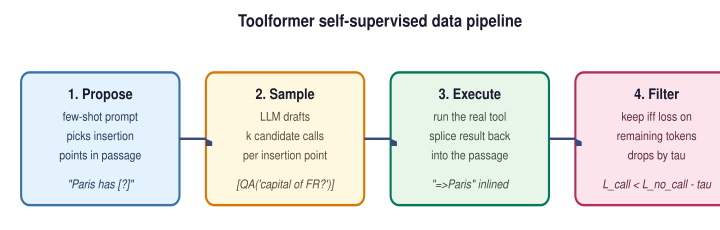
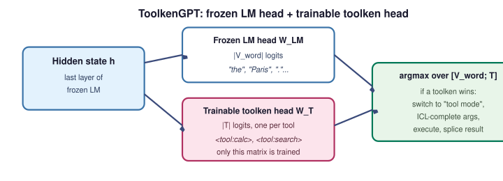
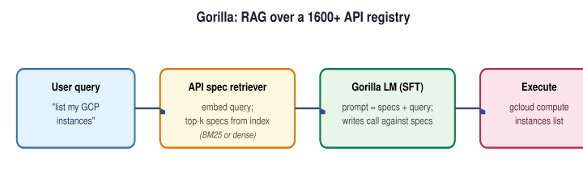

"Give a model a tool and it will use it. Give it the wrong JSON schema and it will use it creatively."
Pip, Schema-Validated AI Agent
Function calling is the bridge between language and action. Without it, an LLM can only describe what tools to use in natural language, forcing brittle regex parsing on the application side. With function calling, the model produces structured JSON that specifies the exact function, arguments, and types, turning unreliable text parsing into reliable API dispatch. This section compares function calling implementations across OpenAI, Anthropic, Google, and open-source providers, covering schema design, multi-tool handling, and streaming behavior. The AI agent from Chapter 26 depends entirely on this mechanism for its action step.
Prerequisites
This section builds on agent foundations from Chapter 26 and LLM API basics from Chapter 11.
27.1.1 The Function Calling Interface
OpenAI shipped function calling on June 13, 2023, and within 48 hours the LangChain repo had a wrapper, a tutorial, and three competing "best practices" blog posts. The feature itself was conceptually identical to ReAct text-parsing, but with one crucial upgrade: the model was now trained to emit valid JSON, and the API was trained to charge you for it. Today every frontier vendor has the same interface with a slightly different name (tools, tool_use, function_call), which is roughly how the JDBC standard got started.
The reason JSON tool-call APIs work better than the early "ReAct in text" pattern is a constrained-decoding effect, not just a parsing convenience. When the provider's runtime constrains the model's logits to valid JSON-schema continuations during generation (via grammars, FSMs, or speculative resampling), the model never enters an invalid state and never has to "recover" from a malformed argument. Free-form parsing forces the model to do two jobs simultaneously: choose the action and produce well-formed syntax. Constrained decoding factors these. This is the same insight behind structured outputs and JSON mode: pushing constraints from the prompt down into the decoder turns a soft preference into a hard guarantee.
When: any agent that calls tools with side effects (payments, emails, ticket creation, database writes). How: the agent generates a UUID per logical tool invocation; the tool implementation checks a deduplication store before executing and returns the cached result on a duplicate key. The key covers a TTL window (typically 24h). Watch for: agents that retry a "failed" call which actually succeeded but timed out on the response. Without idempotency, you charge the card twice. Wire format: include idempotency_key in the tool-call JSON; pass it through to the underlying API (Stripe, Twilio, and most modern APIs accept this header natively).
A tool defined as {action: {type: string, description: "what to do"}} gives the model unlimited latitude to invent actions. Use "enum": ["read", "summarize", "send_draft"] to restrict to operations you have audited and tested. For arguments that are IDs or paths, add "pattern" or "format" constraints. JSON Schema validation at the tool boundary is your last line of defense before an agent takes a real-world action you did not intend to permit.
The deep treatment of the agent loop lives in Section 26.1. The discussion below focuses on the tool-call slot specifically.
Function calling is the wire format for the tool-call slot of the agent loop: the model emits structured JSON naming a function and its arguments, and your application is responsible for executing it and returning the result. Every major provider now supports it; the schema format, multi-tool handling, and streaming behavior differ.
OpenAI was the first major provider to ship function calling (June 2023), and their format has become the de facto standard that many open-source frameworks adopt. Anthropic's tool use implementation adds explicit thinking before tool calls. Google's Gemini API supports function calling with automatic function execution in some modes. Open-source models accessed through frameworks like Ollama or vLLM increasingly support function calling, though the reliability varies by model size and training data.
The name "function calling" is misleading. The model does not execute any code or call any API directly. It produces a structured JSON object that requests a function call. Your application code is responsible for parsing that request, executing the actual function, and returning the result. The model has no access to the network, no ability to run code, and no awareness of whether its requested function call was actually executed. This means all security boundaries, input validation, and rate limiting must be implemented in your application layer, not delegated to the model. Treating the model's output as a suggestion to be validated, rather than a command to be blindly executed, is the foundation of safe tool use.

which forwards the prompt plus tool schema to the LLM. The LLM emits a tool_call with name and arguments to a Parser and Validator (JSON schema check, argument types), which returns validated arguments to the Application. The Application invokes the Tool function (e.g. get_weather(city)), which fetches from an External resource (HTTP API, DB, file), receives raw data, and returns a typed Tool result ('22°C, sunny'). The Application sends the tool_result message back to the LLM with updated context, and the LLM emits the assistant text ('It's 22°C and sunny in Paris.') as the Final reply to the user. A dashed arrow indicates the LLM may emit another tool_call instead of a final reply, looping back to the Parser.Input: user message M, tool schemas {T1, ..., Tn}, LLM model, max iterations K
Output: final text response
1. messages = [system_prompt, M]
2. for i = 1 to K:
a. response = LLM(messages, tools={T1, ..., Tn})
b. if response has no tool_calls:
return response.content // final answer
c. Append assistant message (with tool_calls) to messages
d. for each tool_call in response.tool_calls:
i. name = tool_call.function.name
ii. args = parse_json(tool_call.function.arguments)
iii. result = execute(name, args)
iv. Append tool result message (role="tool", id=tool_call.id) to messages
3. return "Max iterations reached"
OpenAI Function Calling
This snippet defines a tool schema and processes function-call responses using the OpenAI function calling API.
from openai import OpenAI
client = OpenAI()
tools = [
{
"type": "function",
"function": {
"name": "get_weather",
"description": "Get the current weather for a location",
"parameters": {
"type": "object",
"properties": {
"location": {
"type": "string",
"description": "City and state, e.g. San Francisco, CA",
},
"unit": {
"type": "string",
"enum": ["celsius", "fahrenheit"],
"description": "Temperature unit",
},
},
"required": ["location"],
},
},
}
]
response = client.chat.completions.create(
model="gpt-4o",
messages=[{"role": "user", "content": "What is the weather in Paris?"}],
tools=tools,
tool_choice="auto",
)
# Handle the tool call
tool_call = response.choices[0].message.tool_calls[0]
print(f"Function: {tool_call.function.name}")
print(f"Arguments: {tool_call.function.arguments}")get_weather tool via the OpenAI function-calling JSON Schema and triggering it with a natural-language prompt. The model returns a structured tool_calls entry whose function.arguments field is a JSON string that the caller parses and dispatches.Skip the manual JSON schema with PydanticAI (pip install pydantic-ai), which infers tool schemas from type hints:
Show code
from pydantic_ai import Agent
agent = Agent("openai:gpt-4o")
@agent.tool_plain
def get_weather(location: str, unit: str = "celsius") -> str:
"""Get the current weather for a location."""
return f"72F, partly cloudy in {location}"
result = agent.run_sync("What is the weather in Paris?")
print(result.data)get_weather type hints and docstring; the output line shows the model calling the tool with structured arguments, no hand-written schema required.Anthropic Tool Use
This snippet defines tools and handles tool-use responses using the Anthropic messages API.
import anthropic
client = anthropic.Anthropic()
tools = [
{
"name": "get_weather",
"description": "Get the current weather for a location",
"input_schema": {
"type": "object",
"properties": {
"location": {
"type": "string",
"description": "City and state, e.g. San Francisco, CA",
},
"unit": {
"type": "string",
"enum": ["celsius", "fahrenheit"],
"description": "Temperature unit (default: celsius)",
},
},
"required": ["location"],
},
}
]
response = client.messages.create(
model="claude-sonnet-4-20250514",
max_tokens=1024,
tools=tools,
messages=[{"role": "user", "content": "What is the weather in Paris?"}],
)
# Anthropic returns tool_use blocks within the content array
for block in response.content:
if block.type == "tool_use":
print(f"Tool: {block.name}, Input: {block.input}")get_weather tool declared for Anthropic's Messages API using input_schema instead of OpenAI's parameters. Tool invocations arrive as tool_use content blocks inside the assistant message rather than a top-level tool_calls array.Swap providers with one string using PydanticAI, which abstracts away the per-provider schema differences:
Show code
from pydantic_ai import Agent
# Same code works with any provider; just change the model string
agent = Agent("anthropic:claude-sonnet-4-20250514") # or "openai:gpt-4o"
@agent.tool_plain
def get_weather(location: str, unit: str = "celsius") -> str:
"""Get the current weather for a location."""
return f"22C, sunny in {location}"
result = agent.run_sync("What is the weather in Paris?")The quality of your tool descriptions matters more than the schema structure. Models select tools based on the description field, not just the function name. A description that says "Get weather" will be called less reliably than one that says "Get the current temperature, humidity, and conditions for a specific city. Returns real-time data from a weather API." Include when to use the tool, what it returns, and common parameter values in the description.
To understand why function calling is architecturally significant (and not just a convenience feature), consider what happens without it. Before structured function calling, agents had to embed tool invocations in natural language ("I should search for 'weather Paris'"), and application code had to parse these free-form strings with regex or heuristics. This was fragile: minor rephrasing broke the parser, and the model had no formal contract specifying valid actions. Structured function calling introduces a type system for agent actions. The JSON schema defines exactly what the model can do, with what parameters, and in what format. This transforms agent tool use from "string parsing with fingers crossed" into a well-defined API contract, enabling reliable orchestration, automatic validation, and composable tool chains as explored in Section 27.2 (MCP).
27.1.2 Multi-Tool Orchestration
Real agents need multiple tools working together. A research agent might search the web, extract content from URLs, store findings in a database, and generate a report. The model must decide not only which tool to call but in what order, and it must handle the data flow between tool calls. Modern APIs support parallel tool calling, where the model can request multiple tool executions in a single response, significantly reducing the number of round trips for independent operations.
The agent loop for multi-tool orchestration follows a standard pattern: send the user message with all tool definitions, receive the model's response (which may contain one or more tool calls), execute all requested tools, return all results in a single follow-up message, and repeat until the model produces a final text response without tool calls. Managing this loop correctly, especially handling errors from individual tool calls without derailing the entire conversation, is a core engineering challenge.
Who: A product engineer at an online travel agency building an AI trip-planning assistant.
Situation: The assistant needed to handle complex requests like "Plan a 3-day trip to Tokyo, find flights from SFO, and recommend hotels near Shibuya under $200/night." Each request required data from multiple independent APIs (flights, hotels, attractions, itinerary builder).
Problem: The initial implementation called tools sequentially: search flights, then search hotels, then get attractions, then build itinerary. This took 12 seconds per request because each API call waited for the previous one to complete, even when the calls had no data dependencies.
Decision: The team enabled parallel function calling in the API configuration and wrote clear tool descriptions that specified input/output dependencies. The model learned to call search_flights and search_hotels in parallel (independent), then get_attractions sequentially (depends on flight dates), then create_itinerary (depends on all prior results).
Result: Average request latency dropped from 12 seconds to 6 seconds. The model correctly identified parallelizable calls in 94% of requests without any explicit orchestration logic.
Lesson: Clear tool descriptions with explicit input/output specifications let models discover parallelism naturally, often eliminating the need for hand-coded orchestration graphs.
27.1.3 Open-Source Function Calling
Open-source models have rapidly closed the gap in function calling capability. Models like Llama-3.1 (with tool use training), Mistral's function calling models, and Qwen 2.5 support structured tool interactions. These models can be served through vLLM, Ollama, or TGI with OpenAI-compatible API endpoints, making them drop-in replacements for many use cases. The trade-off is typically reliability: frontier models handle complex multi-tool scenarios more robustly, while open-source models may require more careful prompt engineering and schema design.
For teams that need to keep data on-premises or require custom fine-tuning for domain-specific tools, open-source function calling models provide a viable path. Fine-tuning on examples of your specific tool schemas and usage patterns can bring open-source models to near-frontier reliability for a constrained tool set. The ToolACE and Gorilla projects have demonstrated that targeted training on tool-use data can produce highly capable tool-using models from relatively small base models.
Supervised fine-tuning for function calling (OpenAI's API)
The most straightforward way to specialize a model for your tool catalogue is supervised fine-tuning on labelled (input, tool-call) pairs. OpenAI's fine-tuning API accepts the same chat-format JSONL used for standard SFT, with each training example specifying the user message, any required system context, and the expected assistant message containing a tool_calls array with the canonical name and argument JSON. With as few as 50 to 200 high-quality examples per tool, a fine-tuned gpt-4o-mini typically closes most of the gap to gpt-4o on the trained tools while costing several times less per call. The general fine-tuning mechanics (data formatting, training-loss monitoring, evaluation splits) live in Chapter 16; the tool-call-specific addition is just the schema for the assistant message.
Toolformer: self-supervised tool learning with a loss-reduction filter
Hand-labelling enough (input, tool-call) pairs to cover a real tool catalogue is expensive. Toolformer (Schick et al., 2023) showed that the model can mine its own training data with no human annotation, starting from any plain text corpus. The procedure has four stages. First, the LLM is prompted with a few-shot template that asks it to nominate insertion points inside an unlabelled passage (typically after punctuation or noun phrases) where a tool call might plausibly help. Second, at each candidate point the LLM samples several possible tool calls (for example, "[Calculator(231 * 17)]" or "[QA('Who founded Tesla?')]"), each conditioned on the surrounding context. Third, every sampled call is actually executed against the real tool, and the result is spliced back into the passage just after the call. Fourth, and crucially, each candidate is kept only if it reduces the completion loss on the remaining tokens of the original passage, compared to the loss with no call (or with the call but no result). The intuition is that a useful tool-call lowers the model's perplexity on the bytes that came after, because the result span tells the model something it would otherwise have to guess; an unhelpful or hallucinated call leaves the loss flat or higher.
The filtered (input + call + result) sequences become the SFT training set. During fine-tuning the loss is masked on the result span so that the model learns when to emit the call and how to format it, but not to predict what the tool will return (that is the tool's job at inference). The original paper fine-tuned GPT-J 6.7B on five tools (calculator, Wikipedia search, QA, calendar, machine translation) and reached or exceeded much larger models on each tool's downstream tasks. The pattern (insertion-point proposal, sample-and-execute, loss-reduction filter, masked SFT) generalizes well beyond the original tool set and is now the standard recipe for bootstrapping tool data when labelled examples are scarce.

The loss-reduction filter is the heart of the method. For a passage x with a candidate tool call c inserted at position i and the executed result r, the filter compares two weighted next-token losses on the suffix x[i:]:
$$ L_{\text{call}}(c, r) = -\sum_{t \ge i} w_t \log p_M(x_t \mid x_{<i}, c, r, x_{i:t-1}) $$
$$ L_{\text{no-call}} = -\sum_{t \ge i} w_t \log p_M(x_t \mid x_{<t}) $$
The candidate is kept iff $L_{\text{no-call}} - L_{\text{call}}(c, r) \ge \tau$, where $\tau$ is a small positive threshold (the paper uses values such as 1.0 nat per token of suffix). $p_M$ is the same frozen LM used in stage 2; the weights $w_t$ decay with distance from the call site so that nearby tokens dominate the score. Intuitively, a useful call gives the model information it would otherwise have to guess, so the post-call distribution is sharper on the actual continuation; a hallucinated or off-topic call leaves the distribution unchanged or worse.
def loss_reduction_filter(model, passage, call, result, i, tau=1.0):
"""Keep a Toolformer candidate iff it lowers suffix loss by at least tau."""
suffix = passage[i:]
# With-call context: insert "[call] -> result" just before the suffix.
ctx_call = passage[:i] + format_call(call, result)
ctx_none = passage[:i]
L_call = weighted_nll(model, ctx_call, suffix) # eq. for L_call above
L_none = weighted_nll(model, ctx_none, suffix) # eq. for L_no_call above
return (L_none - L_call) >= tau # True -> add to SFT set
def mine_toolformer_data(model, corpus, tool, k=5):
examples = []
for passage in corpus:
for i in propose_insertion_points(model, passage): # stage 1
for call in sample_calls(model, passage, i, n=k): # stage 2
result = tool.execute(call) # stage 3
if loss_reduction_filter(model, passage, call, result, i):
examples.append((passage, i, call, result)) # stage 4
return examples # masked-SFT training set
Code Fragment 27.1.5: Reference pseudocode for the Toolformer filter and outer mining loop. The four numbered comments line up with the four stages in Figure 27.1.3; only candidates that pass loss_reduction_filter survive into the masked-SFT corpus.
Take the passage "Pittsburgh has 302,971 residents and the city of Boston has [?] residents." At the insertion point [?] the LLM samples the candidate call [Calculator(675647 - 372676)], which executes to 302971. Suppose the next 12 tokens of the suffix are "302,971 residents, slightly fewer than Pittsburgh."
- Without the call, the frozen LM assigns weighted NLL $L_{\text{no-call}} = 28.4$ nats on the suffix (it has no way to know the exact figure).
- With the executed result spliced in, the weighted NLL drops to $L_{\text{call}} = 22.1$ nats, because "302,971" is now copy-able from the inserted result.
- The reduction is $28.4 - 22.1 = 6.3$ nats, far above the threshold $\tau = 1.0$, so the candidate is kept.
By contrast, a hallucinated call [Calculator(2 + 2)] would execute to 4, leave the suffix loss essentially unchanged ($\Delta L \approx 0.1$), and be discarded. This is how Toolformer learns when calling is worth it without any human label.
ToolkenGPT: tools as vocabulary tokens with a frozen LM
An alternative to fine-tuning the whole model on every tool is to leave the base LM completely frozen and add a small, trainable head that decides when to switch into tool mode. ToolkenGPT (Hao et al., 2023) does exactly this. The vocabulary is extended with one new toolken per tool (for example, <tool:calculator>, <tool:search>); next-token logits are produced by concatenating the frozen LM head with a small trainable projection that scores only the toolkens. At inference, if a toolken's score beats every word-token score the model switches to "tool mode": it greedily completes the call signature (writing "<tool:calculator>(" then the arguments under an in-context-learning prompt), the runtime executes the tool, the result is appended to the stream, and the model returns to normal decoding. Training touches only the toolken projection, so adding a new tool is a matter of training one extra logit while the rest of the network and the original vocabulary stay frozen, an attractive property when the base model is large or proprietary.
The trade-off versus Toolformer is the usual frozen-vs-tuned trade-off: ToolkenGPT is cheap to update (one new toolken per tool, no full retraining) and preserves the base model's general capabilities perfectly, while Toolformer can shape the model's argument-formatting behaviour more aggressively at the cost of needing a full SFT run per generation of tools. In practice both ideas continue to be useful, sometimes combined: a Toolformer-style data-mining stage produces the (input, call, result) corpus, and a ToolkenGPT-style frozen-backbone head decides at inference time which call to fire.

h feeds the frozen word-token head and a small trainable toolken head; their logits are concatenated, and a softmax over the combined space decides whether the model emits a normal word or switches into tool mode.Concretely, let $h \in \mathbb{R}^d$ be the final hidden state, $W_{\text{LM}} \in \mathbb{R}^{|V| \times d}$ the frozen LM output matrix, and $W_T \in \mathbb{R}^{|T| \times d}$ the trainable toolken head with one row $e_t$ per tool $t \in T$. The next-token distribution over the extended vocabulary $V \cup T$ is:
$$ p(y \mid h) = \mathrm{softmax}\big([\, W_{\text{LM}} h \,;\, W_T h \,]\big) $$
$$ \mathcal{L}_{\text{toolken}} = -\sum_{(h, t^\star) \in \mathcal{D}} \log p(t^\star \mid h) $$
Only $W_T$ receives gradient updates; $W_{\text{LM}}$ and every transformer layer stay frozen. The training set $\mathcal{D}$ pairs hidden states from positions where a tool should fire with the gold toolken $t^\star$, mined either from human demos or from a Toolformer-style filter. Because each new tool adds exactly one row to $W_T$, the cost of expanding the tool catalogue is $\mathcal{O}(d)$ parameters per tool rather than a full fine-tune.
import torch, torch.nn as nn, torch.nn.functional as F
class ToolkenHead(nn.Module):
"""Adds |T| trainable logits on top of a frozen LM head."""
def __init__(self, hidden_dim: int, num_tools: int):
super().__init__()
self.W_T = nn.Linear(hidden_dim, num_tools, bias=False) # only trained matrix
def forward(self, h, frozen_word_logits):
tool_logits = self.W_T(h) # (B, |T|)
return torch.cat([frozen_word_logits, tool_logits], dim=-1) # (B, |V|+|T|)
@torch.no_grad()
def generate_with_toolkens(lm, head, tokenizer, tools, prompt, max_new=64):
ids = tokenizer.encode(prompt, return_tensors="pt")
for _ in range(max_new):
out = lm(ids, output_hidden_states=True)
h = out.hidden_states[-1][:, -1] # final hidden state
logits = head(h, out.logits[:, -1])
nxt = int(logits.argmax(-1))
if nxt >= tokenizer.vocab_size: # a toolken won
tool = tools[nxt - tokenizer.vocab_size]
args = lm.complete_args_in_context(ids, tool) # ICL args sketch
result = tool.run(**args)
ids = torch.cat([ids, tokenizer.encode(f"=>{result}", return_tensors="pt")], dim=1)
else:
ids = torch.cat([ids, torch.tensor([[nxt]])], dim=1)
return tokenizer.decode(ids[0])
Code Fragment 27.1.6: Minimal ToolkenGPT inference loop in PyTorch. The frozen LM provides word logits and the final hidden state; ToolkenHead contributes |T| extra logits, and when one of them wins the argmax the runtime switches into tool mode, executes the call, and splices the result back into the stream.
Suppose a team has a frozen LLaMA-2 70B serving a production assistant and wants to add a weather tool without re-running a full SFT. With ToolkenGPT they add one row to $W_T$ (8192 parameters at $d = 8192$), gather a few hundred (hidden-state, gold toolken) pairs from logs of users who explicitly asked for weather, and train the new row in minutes on a single GPU. The other 70B parameters and the entire word vocabulary are untouched, so the assistant's general behaviour is provably unchanged outside weather queries. Compare this to a Toolformer-style update, which would require regenerating an SFT corpus over the whole tool set and a multi-GPU fine-tune of the 70B backbone.
Gorilla and Gorilla CLI: retrieval-augmented tool selection at scale
Fine-tuning works when the tool catalogue is small enough to fit in the training set. When the catalogue is large (thousands of cloud APIs, the npm registry, a corporate API zoo), enumerating every call in SFT becomes impractical. Gorilla (Patil et al., 2023) and the Gorilla CLI productisation address this with retrieval-augmented tool selection. A vector index is built over the API documentation; at inference time the user's request first retrieves the top-k candidate API specs from the index, those specs are prepended to the prompt as in-context examples, and the fine-tuned Gorilla model writes the call against them. The same mechanism powers Gorilla CLI's user-facing pattern ($ gorilla "list all my GCP instances" or $ gorilla "order my pizza"): the natural-language request is rewritten into an executable command by selecting from an API zoo of thousands of community-contributed specs. The general lesson is that for large tool catalogues, the right architecture is RAG over the tool registry, not SFT on every endpoint; the function-calling mechanism becomes the wire format, and retrieval becomes the routing layer.

from sentence_transformers import SentenceTransformer
import faiss, numpy as np
from transformers import AutoTokenizer, AutoModelForCausalLM
# 1) Build a vector index over API specs once.
specs = load_api_specs("api_zoo/") # list of {name, signature, doc}
encoder = SentenceTransformer("BAAI/bge-small-en-v1.5")
spec_vecs = encoder.encode([s["doc"] for s in specs], normalize_embeddings=True)
index = faiss.IndexFlatIP(spec_vecs.shape[1])
index.add(spec_vecs.astype(np.float32))
# 2) Gorilla LM does the call-writing.
tok = AutoTokenizer.from_pretrained("gorilla-llm/gorilla-7b-hf-v1")
lm = AutoModelForCausalLM.from_pretrained("gorilla-llm/gorilla-7b-hf-v1")
def gorilla_call(query: str, k: int = 3) -> str:
q = encoder.encode([query], normalize_embeddings=True).astype(np.float32)
_, idx = index.search(q, k) # top-k spec ids
context = "\n\n".join(specs[i]["signature"] for i in idx[0])
prompt = f"### API specs:\n{context}\n\n### User: {query}\n### Call:"
out = lm.generate(**tok(prompt, return_tensors="pt"), max_new_tokens=128)
return tok.decode(out[0], skip_special_tokens=True).split("### Call:")[-1].strip()
Code Fragment 27.1.7: A minimal Gorilla-style RAG-over-tools pipeline. The vector index is built once over API documentation; at query time only the top-k specs are placed in the prompt, keeping the context window flat as the catalogue grows.
A platform team wires their internal API zoo (520 REST endpoints across 14 services) into Gorilla. Without retrieval, prepending all 520 specs would consume roughly 180k tokens, busting any reasonable context window. With the retriever returning the top 3 specs per query, the prompt stays under 1.5k tokens and the Gorilla 7B model emits the right endpoint on 92% of held-out user requests. When the catalogue grows to 5000 endpoints six months later, the team only re-runs the encoder over the new specs and updates the FAISS index; the Gorilla LM itself is never retrained, and prompt length stays constant.
Not all "function calling" implementations are equal. Some open-source models format tool calls as JSON within their text output rather than as structured API responses. This means you need a reliable JSON parser that handles malformed output, partial responses, and edge cases like nested quotes. Always test your tool calling pipeline with adversarial inputs that are likely to produce malformed JSON.
Always validate the parameters the model generates before calling the actual tool. Check types, ranges, and required fields. Models frequently produce plausible but invalid inputs (wrong date formats, out-of-range values, missing required fields).
- Function calling provides schema-guaranteed structured output, unlike raw JSON generation which can produce malformed results.
- OpenAI and Anthropic implement the same concept (structured tool invocation) with different API shapes.
- Always validate tool call arguments server-side, even though function calling enforces schemas; defense in depth applies.
Show Answer
Function calling is a provider-native mechanism where the model outputs structured tool invocations that are guaranteed to match a declared schema. Unlike raw JSON output, function calling uses constrained decoding to ensure valid schemas, handles parameter types, and integrates tool results back into the conversation automatically.
Show Answer
OpenAI uses a dedicated 'tools' parameter with 'function' type definitions and returns tool calls in a special message role. Anthropic uses a 'tools' array with 'input_schema' definitions and returns tool use in content blocks within the assistant message. The core concept is identical, but the API shapes differ.
Exercises
Write a JSON schema for a search_products function that takes a query string, an optional category filter, and a maximum number of results (default 10). Follow the OpenAI function calling format.
Answer Sketch
Use {"name": "search_products", "parameters": {"type": "object", "properties": {"query": {"type": "string"}, "category": {"type": "string"}, "max_results": {"type": "integer", "default": 10}}, "required": ["query"]}}. The description field should clearly explain what the function does so the model can decide when to call it.
Implement the same tool (a weather lookup) using both the OpenAI and Anthropic function calling APIs. Compare the request/response formats and identify the key differences.
Answer Sketch
OpenAI uses tools with function type in the request and returns tool_calls in the response. Anthropic uses tools with input_schema and returns tool_use content blocks. Key differences: Anthropic returns tool calls as content blocks within the message; OpenAI uses a separate tool_calls field. Both require sending tool results back in subsequent messages.
Write code that handles parallel tool calls from an LLM response. The model returns three tool calls simultaneously; your code should execute all three concurrently using asyncio.gather() and return the results.
Answer Sketch
Parse all tool calls from the response. Create async wrapper functions for each tool execution. Use results = await asyncio.gather(*[execute_tool(tc) for tc in tool_calls]). Map results back to their tool call IDs and send them all in the next message as separate tool result entries.
Compare function calling capabilities between proprietary models (GPT-4, Claude) and open-source models (Llama, Mistral). What are the main challenges when using open-source models for tool use?
Answer Sketch
Open-source models may not natively support structured tool call output, requiring custom prompt formatting and output parsing. They may hallucinate tool names or produce malformed JSON arguments. Fine-tuned variants (e.g., Gorilla, NexusRaven) improve reliability but may lag behind proprietary models in handling complex multi-tool scenarios. Testing and validation are more important with open-source models.
An agent calls a tool and receives an error response. Describe two strategies for handling this: one where the agent retries, and one where it adapts its approach. When is each strategy appropriate?
Answer Sketch
Retry: appropriate for transient errors (network timeouts, rate limits). The agent waits and retries with the same arguments. Adapt: appropriate for semantic errors (invalid arguments, resource not found). The agent interprets the error message, adjusts its approach (e.g., tries a different search query), and calls a different tool or the same tool with modified arguments.
What Comes Next
In the next section, Model Context Protocol (MCP), we examine how MCP standardizes the connection between agents and tools, enabling a shared ecosystem of tool servers that any agent can use.
Further Reading
tool_calls, recommended dataset sizes, and quality gates for evaluating a fine-tuned tool-calling model.